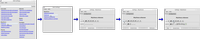
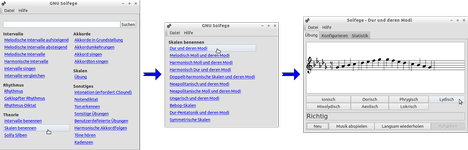
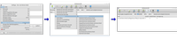

GNU Solfege
Dieser Artikel wurde für die folgenden Ubuntu-Versionen getestet:
Ubuntu 16.04 Xenial Xerus
Ubuntu 14.04 Trusty Tahr
Zum Verständnis dieses Artikels sind folgende Seiten hilfreich:
GNU Solfege  ist ein Programm zur Gehörbildung für Musiker oder solche, die ein Instrument erlernen. Das Programm ist in Python geschrieben und verwendet die GTK+2.0-Bibliotheken. Aufgrund dessen ist das Programm nicht nur unter Linux sondern auch unter Windows und mit einigem Aufwand auch unter Mac OS X lauffähig. Mithilfe von GNU Solfege kann die Erkennung von Intervallen, Akkorden, Tonleitern und Rhythmen geübt und gefestigt werden. Neue Übungen lassen sich leicht unter Verwendung von einfachen Textdateien hinzufügen.
ist ein Programm zur Gehörbildung für Musiker oder solche, die ein Instrument erlernen. Das Programm ist in Python geschrieben und verwendet die GTK+2.0-Bibliotheken. Aufgrund dessen ist das Programm nicht nur unter Linux sondern auch unter Windows und mit einigem Aufwand auch unter Mac OS X lauffähig. Mithilfe von GNU Solfege kann die Erkennung von Intervallen, Akkorden, Tonleitern und Rhythmen geübt und gefestigt werden. Neue Übungen lassen sich leicht unter Verwendung von einfachen Textdateien hinzufügen.
Um das Programm sinnvoll nutzen zu können, wird das entsprechende musiktheoretische Grundwissen vorausgesetzt. GNU Solfege ist nicht dazu gedacht, Musiktheorie und Harmonielehre zu erlernen, sondern soll dazu dienen, das vorhandene Wissen zu trainieren und (z.B. für den Gehörbildungsunterricht) zu festigen.
Auswahl der vorhandenen Übungen:
Erkennung melodischer und harmonischer Intervalle
Intervallgrößen vergleichen
Intervalle nachsingen
Akkorde erkennen und nachsingen
Unvollständig vom Computer dargebotene Akkorde singend ergänzen (z.B. Grundton, Terz, Quint o.ä.)
Tonleitern
Tondiktate
Rhythmusdiktate
Musiktheorie: Intervallnamen und Skalen
Kadenzen und vieles mehr
| GNU Solfege, Startseite |
Installation¶
GNU Solfege kann direkt aus den Quellen installiert werden [1]:
solfege (universe)
 mit apturl
mit apturl
Paketliste zum Kopieren:
sudo apt-get install solfege
sudo aptitude install solfege
Bedienung¶
Bei Ubuntu-Varianten mit einem Anwendungsmenü ist das Programm anschließend unter dem Menüpunkt "Multimedia" oder "Unterhaltungsmedien" zugänglich.
Nach dem Start des Programms öffnet sich ein Startfenster, welches alle vorhandenen Übungen als Links in verschiedenen Übungskategorien anbietet. Diese Links leiten den Benutzer nach Anklicken über ein weiteres Zwischenfenster, in welchem die Übungsoptionen detaillierter festgelegt werden können, zum eigentlichen Übungsfenster.
Das Startfenster ist übrigens jederzeit über das Tastenkürzel F5 zu erreichen.
Kategorien¶
Intervalle¶
Gestartet werden die Intervall-Übungen über die unten im Übungsfenster liegende Schaltfläche "Neues Intervall". Das Programm führt anschließend die Übung aus, indem es ein Intervall vorspielt. Der Benutzer muss nunmehr die Lösung durch Anklicken einer der oben liegenden Lösungsschaltflächen eingeben, wonach ihn das Programm informiert, ob die Antwort korrekt oder nicht korrekt war.
Im Reiter "Konfigurieren" stehen einige Möglichkeiten zur Verfügung, zu den Übungen bestimmte Einstellungen vorzunehmen. Beispielsweise kann festgelegt werden, dass die Lösung nicht über Schaltflächen sondern über eine Klaviatur, ein angedeutetes Akkordeon-Tastenfeld oder anderes eingegeben werden soll.
Der dritter Reiter ("Statistik") des Übungsfensters führt eine prozentuale und absolute Auflistung der erfolgreich bzw. nicht erfolgreich gelösten Übungen in dieser Kategorie auf, zeitlich differenziert in Sitzung, Übungstag, letzte Woche und Gesamtergebnis.
Die nach Intervallgrößen gestaffelte Übung "Intervalle singen" gibt ein Intervall vor und spielt den ersten Ton. Der Benutzer muss nun den zweiten Ton des Intervalls singen und bekommt diesen zweiten Ton zur Kontrolle bei Mausklick auf die Schaltfläche "Letzte Noten spielen" vorgespielt. Der Benutzer kann anhand dessen kontrollieren, ob er den richtigen Zielton gesungen hat. Über den Knopf "Antwort spielen" kann auch noch einmal das gesamte Intervall akustisch ausgegeben werden. Bei richtiger Lösung erfolgt bei Klick auf "Neues Intervall, letztes war richtig" ein positiver Eintrag in die Statistik, und es wird ein neues Trainingsintervall ausgegeben. Falls die Übung falsch gelöst war, ist dementsprechend die andere Schaltfläche zu betätigen, und die Statistik wird entsprechend angepasst.
Rhythmus¶
 Im Bereich der Rhythmusdiktate gibt es solche, welche nach dem Vorspielen durch das Programm entsprechend der akustischen Vorgabe aus vorgegebenen rhythmischen Elementen zusammengestellt werden müssen (siehe Illustration), und freie Diktate, bei welchen jeder Rhythmuston einzeln eingegeben/nachgeklopft werden muss.
Theorie¶
Dieser Übungsabschnitt bietet ein Training bei der Benennung von vorgegebenen Skalen und Intervallen sowie beim Zuordnen der richtigen Solmisations-Silben in verschiedenen Tonarten. Insbesondere die Übungen zu den Skalen sind sehr reichhaltig bestückt und beinhalten Kirchentonarten, Jazz-Skalen, Ganztonleitern und pentatonische Skalen.
|  |
| Skalen benennen |
| Intervalle benennen |
Akkorde¶
Die Abteilung zu den Akkorden bietet Zusammenklänge in Grundstellungen sowie in Umkehrungen zum Trainieren an. Hierbei können diatonische, alterierte, Dominantseptakkorde und viele mehr in enger und weiter Lage geübt werden.
Skalen¶
Der Abschnitt "Skalen" bietet ein prinzipiell ähnliches und inhaltlich sogar noch erweitertes Übungsangebot wie der Übungsteil "Theorie -> Skalen benennen". Allerdings werden hier die Tonleitern nicht optisch als Noten dargeboten sondern vom Programm akustisch vorgespielt, worauf die richtige Lösung angeklickt werden muss.
Sonstiges¶
Der letzte, sehr umfangreiche Arbeitsteil beinhaltet folgende Übungsmöglichkeiten:
"Intonation": es werden intonatorisch unsaubere Quinten vorgespielt. Hierbei kann der Grad der Unsauberkeit spezifiziert werden. Der Übende muss nach dem Vorspielen angeben, ob das Intervall zu eng, zu weit oder korrekt gestimmt ist.
"Notendiktat": in diesem Bereich sind einige Melodien (Volkslieder und Teile von Bach-Inventionen, auch mehrstimmig) gespeichert, die vom Programm als Ganzes oder in Abschnitten vorgespielt werden und vom Übenden dann auf ein Notenblatt niederzuschreiben sind. Über die Schaltfläche "Anzeigen" kann die Übungsmelodie dann angezeigt und mit der eigenen Niederschrift zu Kontrollzwecken verglichen werden.
Konfigurationsmöglichkeiten¶
Über das Menü "Datei" lassen sich noch weitere Programmeigenschaften aufrufen.
Die "Startseite" (welche auch benutzerspezifisch bearbeitet und eingerichtet werden kann) bietet die oben erläuterten Übungsmöglichkeiten. Tests zu Intervallen, Theorie, Akkorden, Skalen und Kadenzen lassen sich über die "Testseite" (alternativ Tastenkürzel F6 ) durchführen. Das Programm führt eine Historie über die zuletzt ausgeführten Übungen und Tests und bietet diese zur Wiederauswahl an.
Über den "Profilmanager" lassen sich für verschiedene Benutzer eigene Profile erstellen.
Im Einstellungsmanager (Tastenkürzel Strg + F12 ) lassen sich noch verschiedenerlei wichtige und hilfreiche Programmeinstellungen vornehmen. So kann zum Beispiel der für das Vorspielen verwendete Instrumentenklang (Standard ist Klavier), die Vorspiel-Tempi, der Stimmumfang (einstellbar auch männlich oder weiblich), die Verwendung von externen Programmen wie für die Verwendung von MIDI und MP3 benötigt, die Spracheinstellung der Benutzeroberfläche und vieles mehr festgelegt werden.
Weitere Funktionen¶
Audioexport¶
 Klänge und Übungen lassen sich als Audiodatei (z.B. .wav-Datei) exportieren, damit sie auch für andere individuelle Übungszwecke jenseits der regulären Programmabläufe zur Verfügung stehen können. Hierzu klickt man in einer Übung auf das Menü "Datei" und wählt dort den Punkt "Übungen als Audiodateien exportieren" aus. Im folgenden Exportfenster gibt ein Mausklick auf die mit einem Plus-Symbol versehene Schaltfläche "Add" (engl. "Hinzufügen") ein Menü frei, aus welchem die zu exportierende Übung ausgewählt werden kann. Dadurch wird diese Übung zum Export vorgemerkt. Ein Klick auf die Schaltfläche "Exportieren" fordert zur Auswahl eines Exportverzeichnisses auf. Wichtig ist, dass das gewählte Verzeichnis vor Beginn des Exports leer sein muss, da anderenfalls unter Anzeige einer Fehlermeldung die Weiterverarbeitung verweigert wird. In diesem Verzeichnis finden sich anschließend die vom Programm exportierten Übungen als Audiodateien zur weiteren Verwendung wieder. Eine beigefügte .html-Datei dient der Erläuterung, welche akustischen Übungen vom Programm angelegt wurden.
Übungen drucken¶
Auf die gleiche Weise wie der Audioexport stellt das Programm auch eine Möglichkeit bereit, Übungen als Notentext zu exportieren, beispielsweise um diese als Übungsblätter zu verwenden. Über das Menü "Datei" ist diesmal der Unterpunkt "Drucken des Gehörübungstests" auszuwählen. Auch hier bietet im darauf folgenden Fenster ein Klick auf die Schaltfläche "Add" die verfügbaren Übungen dar, welche durch Auswahl ins Vormerkfenster übernommen werden. Nunmehr fordert ein Klick auf die Schaltfläche "Erstellen" zur Auswahl eines Exportverzeichnisses auf und setzt den weiteren Export in Gang. Das Exportverzeichnis ist anschließend mit einer Vielzahl, teilweise auf den ersten Blick verwirrenden Dateien und Ordnern gefüllt. Ein Blick in die vom Programm ebenfalls erstellte README.txt verrät allerdings, dass die gewünschten Übungsblätter im Unterordner lilyout als Dateien questions.dvi und answers.dvi zur weiteren Verwendung und zum eventuellen Ausdruck bereit liegen.
Programm- und Konfigurationsdateien¶
Das Wissen um die Ablage der wichtigsten Programm- und Konfigurationsdateien kann zum Beispiel für Wartungsarbeiten oder für die Übertragung von Einstellungen auf einen anderen PC hilfreich sein.
Die Haupt-Programmdateien wie zum Beispiel auch die Übungen liegen unterhalb des Verzeichnisses /usr/share/solfege. Die Konfiguration befindet sich in der Textdatei ~/.solfegerc, welche von Hand editiert werden kann. Dennoch wird empfohlen, Veränderungen der Einstellungen über die grafische Programmoberfläche vorzunehmen. Profile und Statistiken speichert das Programm im Verzeichnis ~/.solfege.
Problembehebung¶
Beim Installieren des Programms wird kein Benutzerhandbuch mitinstalliert, so daß der Klick auf die Programmschaltfläche "Hilfe -> Benutzerhandbuch" ins Leere führt und eine Fehlermeldung ausgibt. Das Benutzerhandbuch lässt sich aber manuell nachinstallieren. Hierzu ist folgendermaßen vorzugehen:
Öffnen der Internetseite http://docs.solfege.org/
In der Zeile "As one big HTML file" den gewünschten Sprachlink (z.B. "de" für Deutsch) heraussuchen und mit
 -Mausklick die HTML-Datei herunterladen.
-Mausklick die HTML-Datei herunterladen.Nach dem Herunterladen ist die Datei umzubenennen in index.html.
Die umbenannte Datei muss zuletzt mit Root-Rechten in den (unter Umständen noch neu zu erstellenden) Ordner /usr/share/solfege/help/C/ kopiert werden.
 Programmübersicht
Programmübersicht - Erstellt mit Inyoka
-
 2004 – 2017 ubuntuusers.de • Einige Rechte vorbehalten
2004 – 2017 ubuntuusers.de • Einige Rechte vorbehalten
Lizenz • Kontakt • Datenschutz • Impressum • Serverstatus -
Serverhousing gespendet von